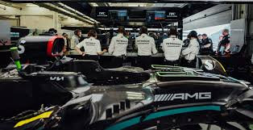

F1 Inside Track
Berita Terbaru
Ikuti perkembangan terbaru Formula 1 dari seluruh seri balapan dunia. F1 Inside Track menghadirkan kabar resmi dari tim, pembalap, dan FIA dengan penyajian ringkas, faktual, dan mudah dipahami. Hasil kualifikasi dan balapan Grand Prix terbaru, update kondisi pembalap, serta pernyataan resmi tim pasca-race kami rangkum untuk memastikan Anda tidak tertinggal satu pun momen penting Formula 1.
Analisis Balapan
Kami mengulas jalannya balapan Formula 1 lebih dalam melalui analisis strategi dan data. Setiap keputusan pit stop, pemilihan ban, dan perubahan kondisi lintasan kami bahas secara objektif dan berbasis fakta.
- • Strategi pit stop dan manajemen ban
- • Race pace dan degradasi ban
- • Keputusan krusial tim di lintasan
- • Keputusan krusial tim di lintasan
F1 Tech Insight

Mengulas inovasi teknis dan regulasi Formula 1 yang berdampak langsung pada performa mobil di lintasan.
Feature Utama
 Analisis mendalam tentang strategi balapan dan keputusan penting yang memengaruhi hasil Grand Prix Formula 1.Race Report
 Laporan lengkap jalannya balapan Formula 1, mulai dari start, pit stop, hingga hasil akhir race.
Laporan lengkap jalannya balapan Formula 1, mulai dari start, pit stop, hingga hasil akhir race.